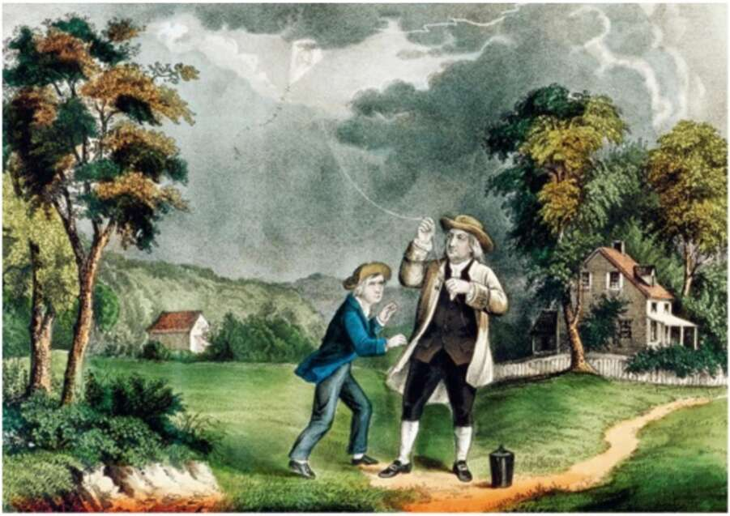

34. Benjamin Franklin disarming the gods. A famous example is lightning. Many cultures believed that lightning was the hammer of an angry god, used to punish sinners. In the middle of the eighteenth century, in one of the most celebrated experiments in scientific history, Benjamin Franklin flew a kite during a lightning storm to test the hypothesis that lightning is simply an electric current. Franklins empirical observations, coupled with his knowledge about the qualities of electrical energy, enabled him to invent the lightning rod and disarm the gods. Poverty is another case in point. Many cultures have viewed poverty as an inescapable part of this imperfect world. According to the New Testament, shortly before the crucifixion a woman anointed Christ with precious oil worth 300 denarii. Jesus’ disciples scolded the woman for wasting such a huge sum of money instead of giving it to the poor, but Jesus defended her, saying that ‘The poor you will always have with you, and you can help them any time you want. But you will not always have me’ (Mark 14:7). Today, fewer and fewer people, including fewer and fewer Christians, agree with Jesus on this matter. Poverty is increasingly seen as a technical problem amenable to intervention. It’s common wisdom that policies based on the latest findings in agronomy,
